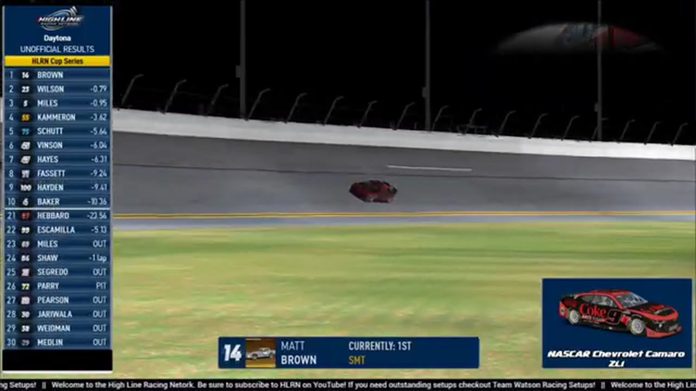

Matt Brown
SMT Racing
1 RECOVERED WIN / EVERY ONE RECEIPTED
- Official files
- 17
- Central editions
- 3
- Exact tape cues
- 30
- Accepted podiums
- 2
Matt Brown's accepted HLRN result file contains 1 supported feature win and 2 recovered podiums: S2 R3 at Chicagoland (P2); S1 R12 at Daytona (P1). HLRN materials currently associate the file with SMT Racing. The currently indexed source window runs from November 17, 2025 through July 20, 2026.
The searchable official-broadcast footprint covers 17 race files, with the heaviest repeated track signal at Daytona. 3 Highline Central editions and 30 primary-race jump points connect the result ledger back to the tape. The densest direct-tape categories are incident (8 cues) and postrace (5 cues). Those counts describe where the name is easiest to find; they are not fault, pace, or performance grades. A source-attributed car frame is published with its original video and timestamp. That is the current discovery map for Matt Brown.
No unsupported start total, full points total, car number, or finishing position is added around those receipts. The dossier grows from accepted results and source appearances, not from broadcast-name volume. Separately, 6 Highline Live files sit on the bonus shelf and never enter the official season ledger. The displayed name is labeled transcript normalized; that status remains visible so an owner roster can strengthen or correct the identity without rewriting the evidence trail. Those boundaries define Matt Brown's public HLRN file.
10 featured race-tape cues
These are discovery routes into complete HLRN broadcasts, not performance grades or inferred results.
- S2 / R3 · FINISH
Ethan Moreno completes Chicagoland's final restart
Ethan Moreno controls the last restart, pulls clear through the final lap, and receives the live Chicagoland winner call with Matt Brown, Dylan Jones, and Kyle Cameron behind him.
Chicagoland - S1 / R12 · FINISH
Matt Brown takes Daytona after the leaders crash on the final lap
The white flag falls with Jaden Porter leading, but the front group crashes on the final lap. Matt Brown clears the wreck, takes the lead, and receives the live winner call at 1:36:26.
Daytona - S1 / R12 · STAGE
Stage 2 countdown at Daytona
S1 / R12 at 1:10:03: The broadcast enters a stage-scoring discussion at Daytona with Trevor Haley, Ricky Miles, and Matt Brown in the scoring call. The clip preserves the on-air timing or points call without promoting it into a complete stage result; the accepted feature result ledger remains separate.
Daytona - S1 / R7 · STAGE
Stage 2 scoring discussion at Michigan
S1 / R7 at 1:15:26: The broadcast enters a stage-scoring discussion at Michigan with Nick Bowman and Matt Brown in the scoring call. The clip preserves the on-air timing or points call without promoting it into a complete stage result; the accepted feature result ledger remains separate.
Michigan - S1 / R12 · BATTLE
The Daytona lead pack goes three wide
S1 / R12 at 59:42: The Daytona pack compresses three wide while Jaden Porter and Matt Brown are named on the call. The chapter keeps the live battle intact and makes no finishing-order claim.
Daytona - S1 / R7 · BATTLE
Matt Brown and Cory Cook carry the Michigan lead battle
S1 / R7 at 1:12:15: The Michigan pack compresses in a front-pack fight while Matt Brown and Cory Cook are named on the call. The chapter keeps the live battle intact and makes no finishing-order claim.
Michigan - S2 / R2 · RESTART
Matt Brown and Trace McDowell bring Iowa back to green
S2 / R2 at 2:02:27: Matt Brown, Trace McDowell, and Matthew Graham are in the booth's front-pack call as Iowa returns to green. The cut keeps the restart launch and the first lap of lane development together.
Iowa - S1 / R7 · RESTART
Nick Bowman and Craig Martin bring Michigan back to green
S1 / R7 at 1:47:25: Nick Bowman, Craig Martin, Matt Brown, and James Smith are in the booth's front-pack call as Michigan returns to green. The cut keeps the restart launch and the first lap of lane development together.
Michigan - S1 / R5 · RESTART
The Watkins Glen field takes the opening green
S1 / R5 at 41:56: The official Watkins Glen race broadcast reaches the opening green, with Jacob Brown, Juan Escamilla, Matt Brown, and Ethan Holland among the first drivers named. This cut begins before the launch and stays with the first live-race call.
Watkins Glen - S1 / R3 · RESTART
The Charlotte field takes the opening green
S1 / R3 at 36:53: The official Charlotte race broadcast reaches the opening green, with Billy Rickett, Matt Brown, and Trevor Haley among the first drivers named. This cut begins before the launch and stays with the first live-race call.
Charlotte
Recent editions connected to Matt Brown
Moreno Owns the Chicagoland Closing Run
Nick Bowman led the most laps, but Ethan Moreno pulled clear of Matt Brown and Kyle Cameron when the final lap arrived.
S1 / R12Brown Survives Daytona
A final-lap wreck removed the front group and opened the lane for Matt Brown, Ryan Wilson, and Ricky Miles.
S1 / R7Randy Steals Michigan Late
Trevor Haley and Cory Cook split the stages, but Randy Showers timed the closing run and passed Logan Wilson for his first Highline win.
Complete starts, finishes, and points remain open beyond the recovered results. Name normalization remains reviewable against owner records.